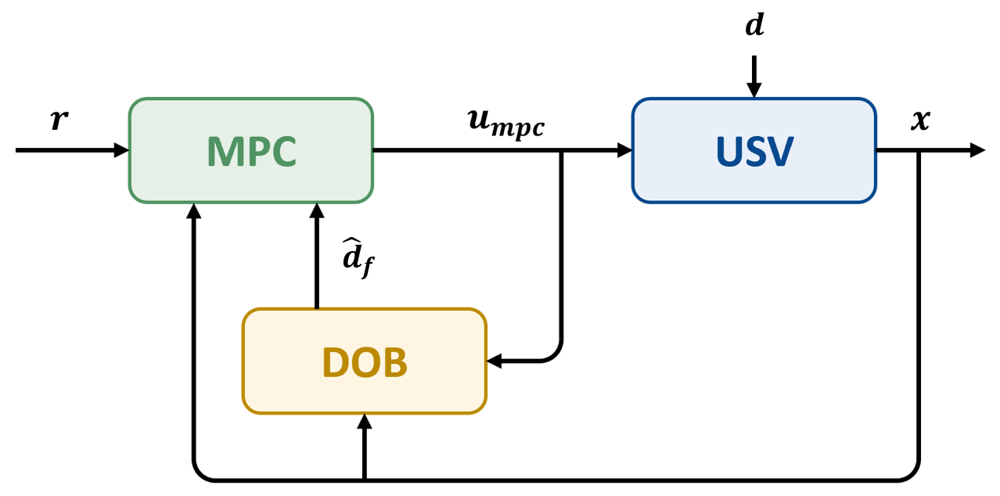
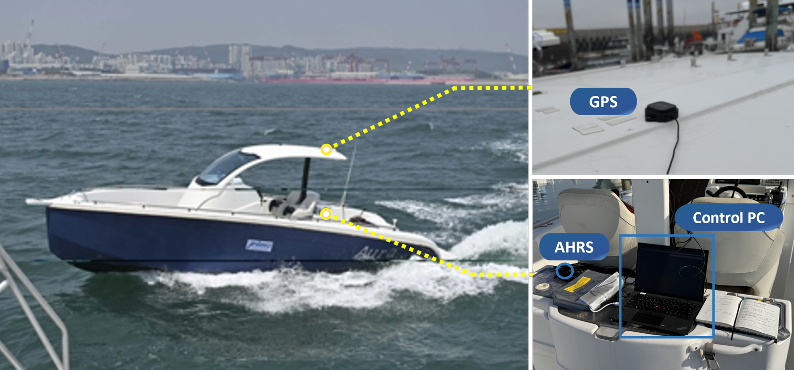

Abstract
This paper proposes a disturbance observer-based model predictive control (DOB-MPC) framework for robust trajectory tracking of unmanned surface vehicles (USVs) under environmental disturbances. While model predictive control (MPC) naturally handles the underactuation and actuator constraints of USVs through constrained optimization, its model-based nature makes it vulnerable to external disturbances and model uncertainty, which degrade tracking accuracy. To overcome this, the proposed framework incorporates real-time disturbance estimates into the MPC prediction model rather than directly compensating the control input, which yields disturbance-aware and feasible control inputs while avoiding the instability and degraded performance arising from slow actuator dynamics. Validated through open-sea experiments on an 8 m class USV, the proposed method achieves significant improvements in trajectory tracking performance compared to nominal MPC.
Method Overview
A disturbance observer embeds its estimate inside the MPC prediction model — not the control input.

Experimental Platform
Open-sea trials off Jeongok Port, Korea, on the 8 m outboard single-engine USV AURA.

Results
DOB-MPC keeps the underactuated hull on the figure-eight reference where nominal MPC drifts inside the loops.
| Exp. | Trajectory | Method | RMSE (m) | Max error (m) |
|---|---|---|---|---|
| 1 | 150 × 75 m | Nominal MPC | 8.09 | 19.49 |
| DOB-MPC | 3.31 (59% ▼) | 6.56 (66% ▼) | ||
| 2 | 240 × 85 m | Nominal MPC | 5.21 | 14.84 |
| DOB-MPC | 3.94 (24% ▼) | 11.01 (26% ▼) |
Tracking speed 6 knots (3 m/s) · MPC horizon N = 40 · MPC sampling 0.5 s · DOB sampling 0.1 s. DOB-MPC lowers both RMSE and maximum tracking error in each experiment.